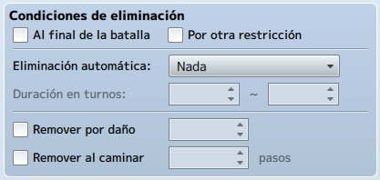
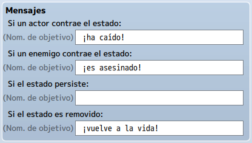

Hasta ahora, hemos creado una nueva habilidad, así como un elemento que usaba el cuadro de fórmula de daño.
Sin embargo, hemos utilizado la fórmula predeterminada. ¿Y si quisiéramos utilizar fórmulas diferentes?
En este tema aprenderemos a crear Fórmulas de daño adaptadas a nuestras necesidades.
También veremos la pestaña de Estados y como aplicar estas fórmulas.
• Crear Fórmulas de daño.
• Pestaña de Estados de la base de datos.
Si echas un vistazo a las habilidades prefabricadas en RMMV, verás que no todas las habilidades son iguales.
A continuación se muestran algunos ejemplos de diferentes circunstancias que pueden cubrirse con diferentes
fórmulas de daños.
• Un ataque que atraviesa la defensa del enemigo: Si deseas modificar la fórmula básica, utiliza
[a.atk*4] en vez de [a.atk*4-b.def*2]. Una habilidad que no tenga en cuenta la defensa de un enemigo
en la fórmula de daño hará daño según el ataque del usuario. Así mismo, puede realizar un hechizo con
el formato [a.mat], en lugar de [a.mat-b.mdf], tener una habilidad de perforación de defensa mágica.
• Un ataque que causa daño basado en el PV del objetivo: También puede conectar PV Máximo y PV
(PV actual) en fórmulas (PM máximo y PM actual). ¿Y si quisieras realizar un ataque de gravedad en la
línea del hechizo de Demi en Final Fantasy? Las habilidades de gravedad, por definición, no pueden
matar a su objetivo. Entonces, usemos PV. Escribiremos [b.hp/4] que resultaría en una habilidad que
causa un daño equivalente a una cuarta parte del PV restante del enemigo. Si tuviéramos que cambiar PV
por PV Máximo, la misma habilidad haría una cuarta parte de su PV máximo en daño.
• Una habilidad que aumenta las estadísticas del usuario mientras daña al enemigo: Si observas la
funcionalidad de stock de RMMV, notarás que esto es aparentemente imposible. Si creas un ataque y usas
Efectos para agregar estados o estadísticas de mejora/desventaja, verás que el objetivo también las
obtendrá. Pero quizás quieras una habilidad que aumente mi Agilidad durante dos turnos cada vez que me
conecto con ella. Podríamos usar .addBuff() para lograr eso (.addDebuff() reduce una estadística en su
lugar). Entonces, una habilidad que aumenta la agilidad del usuario durante dos turnos mientras daña a
un enemigo se vería como: [a.addBuff(6,2);a.atk*4-b.def*2].
¿Qué pasa con los números entre paréntesis en el .addBuff()? Cuando agregamos ventajas o desventajas a
través del cuadro de fórmulas de daño, puedes declarar el parámetro (estadística) a afectar, así como
la duración del turno. El primer parámetro es la Agilidad y el segundo la Duración del turno.
Si tienes curiosidad por ver las diversas abreviaturas de parámetros en RPGMaker MV, hagamos un breve viaje
a la tierra de JavaScript.
• Si estás usando Windows, abre el Bloc de notas y luego dirígete a la carpeta js de su proyecto de
juego. El archivo JavaScript que nos interesa se llama rpg_objects.js.
• Si estás utilizando Mac OS, cualquier procesador de texto básico le servirá tanto como el Bloc de
notas. Busca el archivo rpg_objects.js en la carpeta js de su proyecto de juego.
• En cualquier caso, abriremos el archivo JavaScript y nos dirigiremos a Game_BattlerBase. Si te
desplazas hacia abajo después de encontrar esta zona del archivo, en la parte derecha del código
encontrarás un objeto JavaScript (Object.defineProperties) que contiene una lista de parámetros y sus
valores internos. Dado que el código MV relevante tiene más de tres páginas, vamos a ver los más
utilizados.
Nota: Las ventajas y desventajas solo se aplican a los primeros ocho de la lista (en otras palabras, desde MHP hasta LUK).
Los estados principalmente funcionan de la misma manera.
Puedes declarar .addState(X), donde X es la entrada de la base de datos para el estado que desea utilizar. El
número de turnos que durará un estado está determinado por las propiedades del estado en la base de datos.
Entonces si tenemos la lista predeterminada de estados (de los cuales hay 10), podemos realizar un ataque
que envenene al usuario y dañe al enemigo de la siguiente manera: a.addState(4);a.atk*4-b.def*2.
Es bueno tener en cuenta que solo necesitamos usar los comandos cuando deseamos aplicar efectos tanto al
usuario como al objetivo. Si tienes un hechizo de curación que también aumenta la agilidad, puedes cubrirlo
bien con una fórmula de daño y el efecto de adición de beneficio (o puedes usar también un efecto de
recuperación de PV para la parte de curación del hechizo).
Echemos un vistazo a la pestaña Estados de la Base de datos.
Como señalamos anteriormente, usar .addState requiere que se establezca qué estado desea agregar, y examina
el valor de la base de datos para determinar qué agregar. Entonces, Muerte es 1, mientras que Ceguera es 5,
por ejemplo.
Los estados tienen una o dos cosas nuevas, pero no muchas que no hayamos visto ya en una forma similar.
• Configuración general:
- Restricción: Define lo que le sucede a alguien afectado por el estado. La
mayoría de las opciones son acciones más forzadas que restricciones. En el caso de Muerte, el
actor o enemigo No se puede mover (lógicamente, ¡ya que están muertos!). Sin
embargo, también tienes Nada, Atacar a los enemigos,
Atacar a cualquiera, y Ataca a los aliados.
• Condiciones de eliminación: Definimos cuando se elimina un estado. Esto es más
importante para los actores, dado que los enemigos dejan de existir después de que terminas de luchar
con ellos. Si no define ninguna condición de eliminación, la única forma de eliminar el estado sería
tener un elemento o evento que haga precisamente eso.

- Al final de la batalla: Es autoexplicativo. Una vez que la batalla termina,
también termina el estado.
- Por otra restricción: Será reemplazado por un nuevo estado con una restricción
de acción diferente. Por ejemplo, puede tener un estado de Rabia que se ve afectado por
restricciones, de modo que si su actor afectado por Rabia queda aturdido u obstaculizado de
alguna otra manera, pierde el estado.
- Eliminación automática: Te permite establecer si el estado se elimina
automáticamente después de un cierto número de turnos o no.
◦ Fin de la acción: Significa que el estado se eliminará después de que el
actor o enemigo afectado realice una determinada cantidad de acciones.
◦ Fin de turno: Significa que el estado se eliminará después de un cierto
número de turnos de batalla.
- Duración en turnos: Solo se puede editar si ha seleccionado Fin de la acción o
Fin de turno en Eliminación automática. El primer cuadro define el número mínimo de turnos que
durará el estado, mientras que el segundo cuadro indica el número máximo de turnos.
- Remover por daño: Da un porcentaje de probabilidad basado en el número
colocado en la casilla correspondiente para eliminar el estado cuando el actor o enemigo sufre
daño.
- Remover al caminar: El estado se elimina automáticamente después de que el
actor da un cierto número de pasos en el mapa. Puede tener cualquier número del 0 al 9999 en ese
cuadro.
• Mensajes: Hay cuatro tipos de Mensajes puedes editar.

Aparecen cuando un actor recibe un estado, un enemigo recibe un estado, el final de un turno cuando un actor o enemigo todavía se ve afectado por un estado (si el estado persiste) y cuando el estado se elimina.
Nota: Vale la pena mencionar que el estado 0001 es un estado especial que se aplica automáticamente cada vez que los Puntos de Vida (PV) de un personaje llegan a 0. Por defecto, se llama Muerte.
De vuelta a las fórmulas de daño, ya vimos la existencia de addBuff() y addState().
De paso, removeBuff() y removeState() también existen. Los métodos de eliminación solo aceptan un único
parámetro entre paréntesis.
En el caso de removeBuff(), declaras para cuál de las ocho estadísticas principales deseas eliminar un
beneficio. Para removeState(), le indicas qué estado se eliminará.
En el caso que vimos anteriormente ([a.addBuff(6,2);a.atk*4-b.def*2] hemos utilizado un punto y coma para
dividirlos de la fórmula de daño. Hay una regla poco conocida sobre las fórmulas de daño que no se menciona
dentro de RMMV, pero aquí está:
En cualquier fórmula, debe terminar la fórmula con un valor de daño (o curación, según sea el caso).
La forma más fácil de probar o refutar esa afirmación es editando la fórmula de daño de tu nueva habilidad
de arco y agregando un punto y coma después del daño con un comando addState() o addBuff() (recuerda que "a"
antes del comando denota usuario, mientras que "b" denota objetivo). Si lo hiciste correctamente, verás que
tu habilidad ahora no hace nada más que aplicar el beneficio o el estado. Ahora, cambia las dos mitades de
la fórmula y volverás a hacer daño.
Aquí hay algunas otras cosas interesantes que puede hacer con las fórmulas de daño:
• Crear una habilidad que cause más daño según los estados activos del objetivo: Digamos que quieres
un enemigo que envenene al grupo del jugador y luego intente consumir ese veneno para causar daño a
sus víctimas. Podrías tener una fórmula como esta:
if (b.isStateAffected(x)) {b.removeState(x); Winter.phys(1.0,a,b);} else {0}
isStateAffected() es otro método dentro de RMMV. Como sugiere el nombre, comprueba si el objetivo tiene
X estado, donde X es el número del estado en la base de datos.
Si el objetivo tiene X estado, la habilidad elimina el estado y luego aplica una fórmula de daño
personalizada (esa es la parte Winter.phys).
Nota: También necesitaremos otra habilidad que inflija un estado que su nueva habilidad pueda eliminar, si desea probar la fórmula.
Si el objetivo no tiene X estado, entonces la habilidad hace 0 de daño.
Los que tengáis experiencia en programación reconoceréis la fórmula anterior como una rama condicional "If". La caja de fórmula de daño es completamente robusta. Puede contener cualquier cantidad de JavaScript que pueda caber en la misma (lo cual, dado que el cuadro de daño de MV no tiene límite de caracteres, es bastante inmenso).
Haz un grupo de enemigos con un solo monstruo que diga algunas palabras antes de morir.
Crea un enemigo con tres habilidades diferentes (incluida la habilidad de ataque normal). Tener una habilidad requiere que el enemigo esté en un estado para usar, y otra de sus habilidades otorga ese estado.
Crea un enemigo que use una sola habilidad en una cuenta regresiva de tres turnos.
Crea una fórmula de daño que incluya una variable.